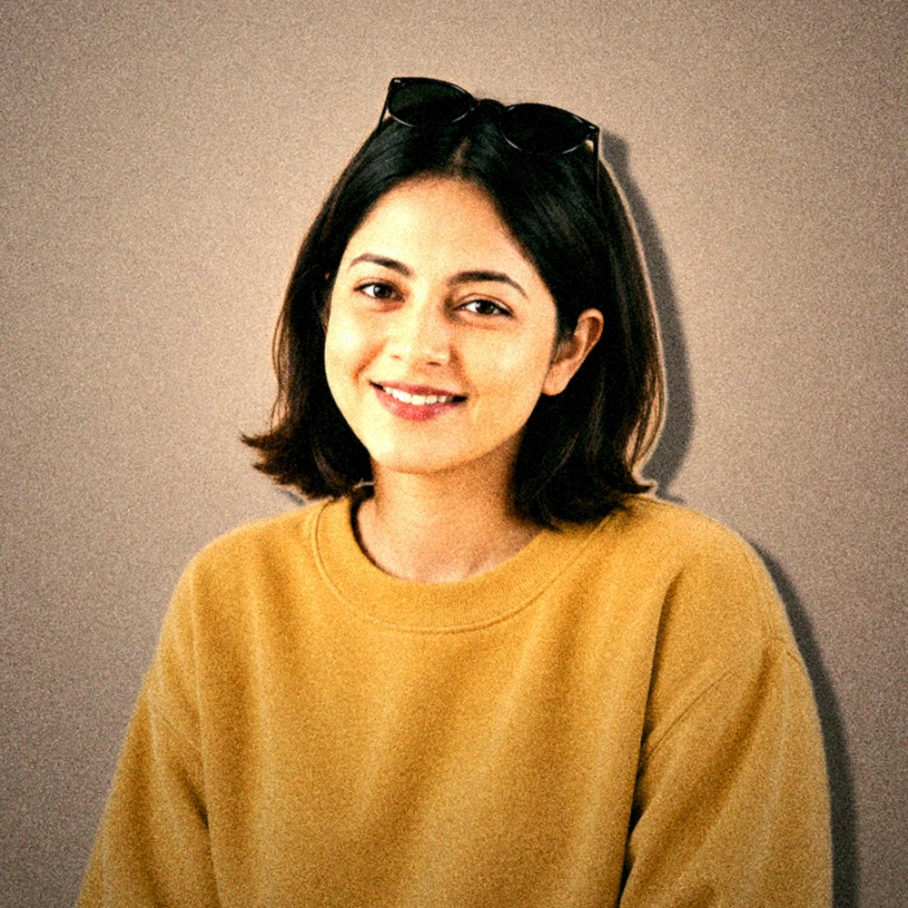
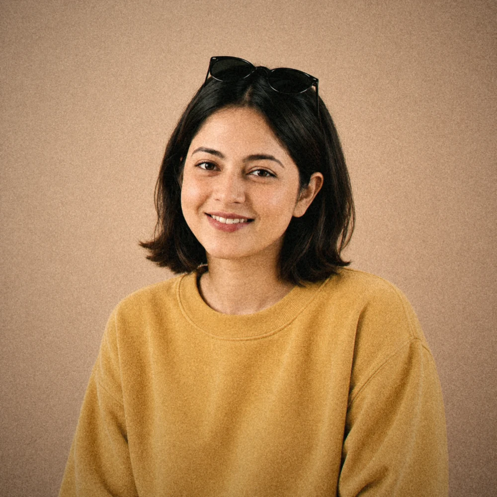
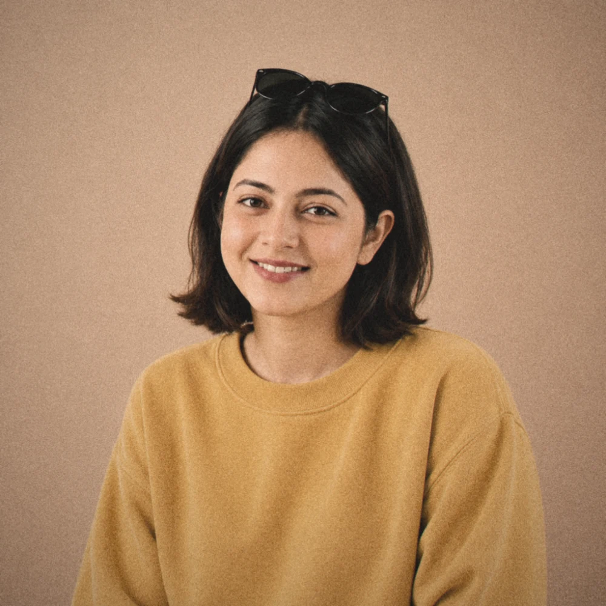
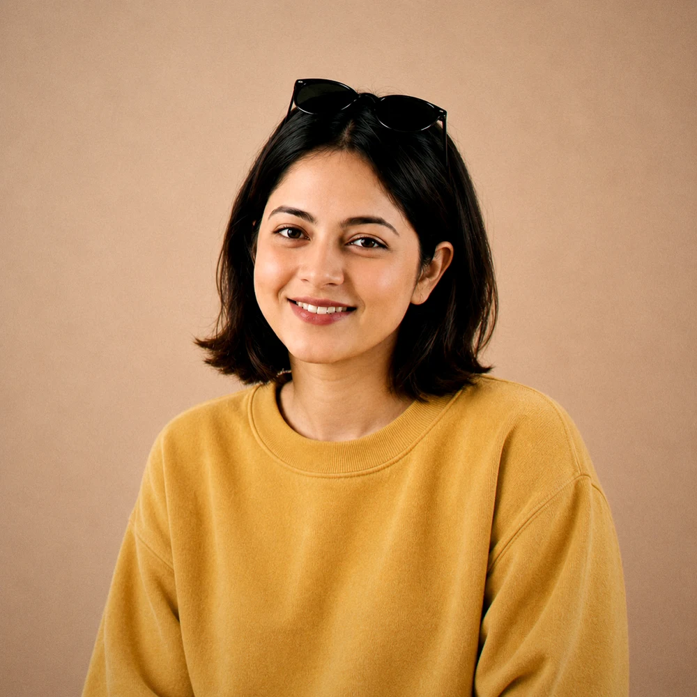

Staff product designer, fintech first.
I’m a product designer working remotely from Bangalore, working fluidly across product, design, and engineering. I think of design as a problem-solving framework with higher-leverage applications than screens and, at my best, deliver solutions in one fluid motion.
I’ve been designing consumer applications for the last 11 years and playing with code since I was 12. I’m currently a Staff Product Designer at Okta.
Beyond my day job, I partner with founders to design the systems that create great products and honor their relationships with their customers. I enjoy working closely with people who are building something meaningful and helping bring their ideas to life.
Open to Staff or Lead Product Designer roles.
Outside of my design work, I’m a mother, wife, sister, and daughter. I’m a maker at heart, deeply curious about the world around me. I love exploring ideas, making things, and finding inspiration in unexpected places. I still find time for the occasional session of writing poetry and spending time with my little creative club.
Outside the work, I’m:
- painting, mostly people
- taking baking classes
- giving talks on accessibility
I can always find time on my calendar for a kindred creative spirit. Please do say hi, on LinkedIn or by email.
 Ask Moss anything else
Ask Moss anything else





Product designer, fintech first. A maker at heart.


Talks. The Saga of Accessibility, on Design Sundays


People. Design meetups, and the people I work with


Making. Painting, baking, and the occasional poem


Books. Some of the ten on my shelf